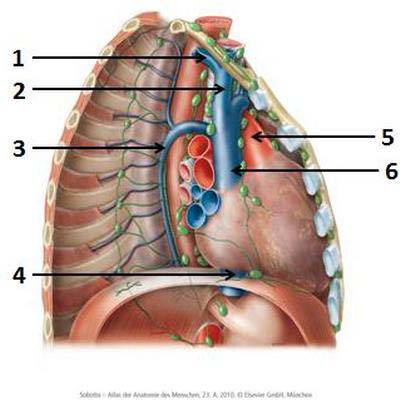
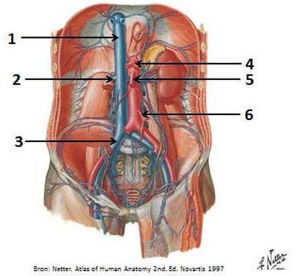
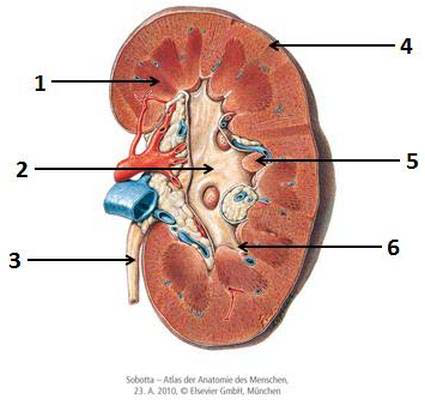
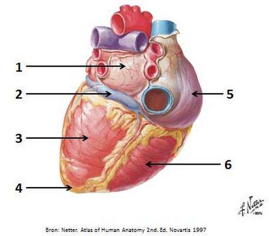
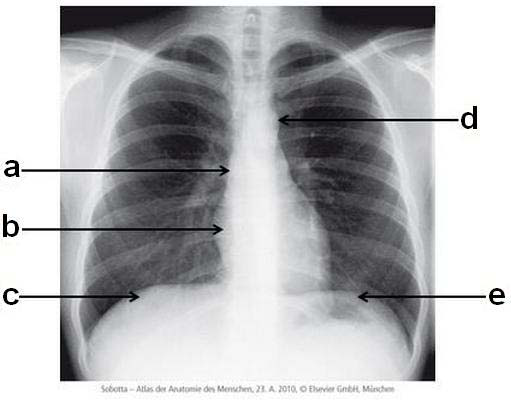
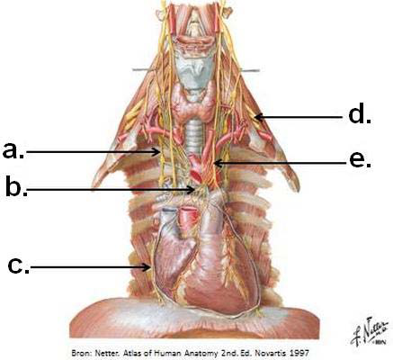
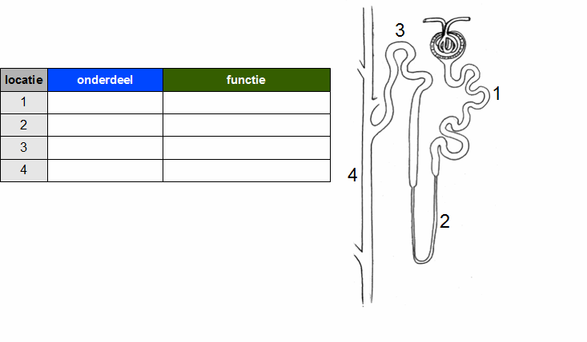
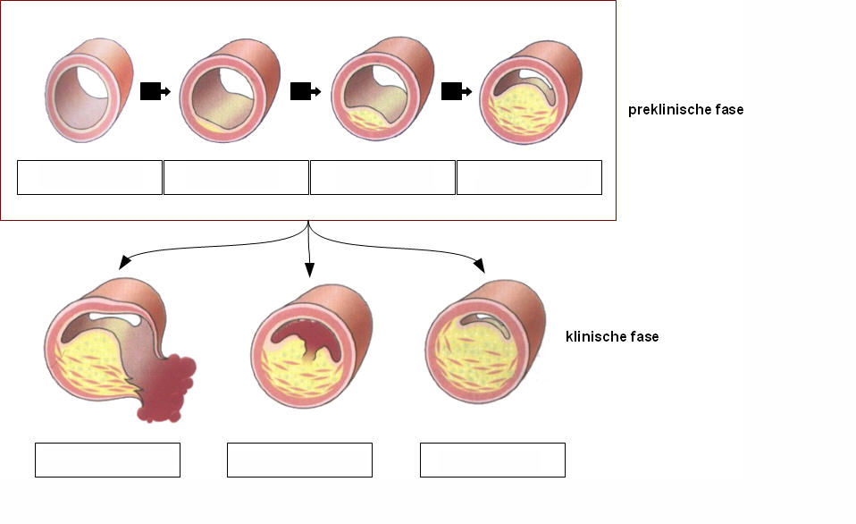

Menu
Circulatie en volumeregulatie1e Toetsmoment 2017‑2018
Examen inleveren
Weet je zeker dat je het examen afsluit?
Examen resetten
Al je antwoorden worden gewist en je begint opnieuw. Weet je het zeker?
Jouw resultaten
Circulatie en volumeregulatie · 1e Toetsmoment 2017‑2018
—
/ 58
0
Goed
0
Fout
0
Niet beantwoord
Vraag 1
Eiwitten die bezet zijn met suikerstructuren, zijn een belangrijk structureel onderdeel van de extracellulaire matrix van de vaatwand. Zij dragen bij aan de juiste mix van stevigheid en elasticiteit door de unieke moleculaire eigenschap dat negatief geladen repeterende suikerstructuren middels aantrekking van water een flexibele gel laat ontstaan.
Hoe heet deze klasse van eiwitten?
Vraag 2
Bloedgroepen en plasmaeiwitten worden gekenmerkt door covalente binding van complexe vertakte suikerstructuren op hun oppervlak. Binnen cellen worden deze suikerstructuren zelden tot nooit aangetroffen op eiwitten.
Welke twee rollen worden door deze suikerstructuren vervuld?
Meerdere antwoorden mogelijk.
Vraag 3
De remming van Cyclo-oxygenase-1 (COX1) door non-steroidal anti-inflammatory drugs (NSAIDs, zoals aspirine en ibuprofen) remt chronische ontstekingsreacties, maar kan ook leiden tot bloedingen.
Waarom?
Vraag 4
Het essentiële onverzadigde vetzuur linolzuur (linolenate, omega-3) komt voor in plantaardige oliën zoals olijf- en zonnebloemolie, die geacht worden te beschermen tegen hart- en vaatziekten. Dit in tegenstelling tot verzadigd vet uit boter en rood vlees dat als risico-verhogend wordt beschouwd.
Linolzuur is belangrijk voor de productie van eicosanoïden via het intermediair
Vraag 5
LDL en HDL worden vaak het slechte en het goede cholesterol genoemd, vanwege hun tegengestelde relatie met het voorkomen van hartaanvallen (myocardinfarct).
Welke rol speelt HDL in het cholesterol metabolisme?
Vraag 6
Er is een sterke associatie tussen het hebben van een hoog cholesterol gehalte in bloed en het risico op hart- en vaatziekten. Macrofagen in de bloedvatwand spelen een belangrijke rol omdat ze cholesterol stapelen en veranderen in inflammatoire schuimcellen.
Hoe nemen ze dat cholesterol op?
Vraag 7
De levercel kan zeer snel vetzuren produceren na een overvloedig koolhydraatrijk dieet.
Maar hoe zorgt een levercel ervoor dat een nieuw gesynthetiseerd vetzuur niet direct weer wordt afgebroken via de β-oxidatie?
Vraag 8
Statines verlagen efficiënt het bloed cholesterolgehalte door remming van cholesterolsynthese. Ze heten officieel HMG-CoA reductase remmers, en remmen de omzetting van HMG-CoA naar mevalonaat, de eerste unieke stap van de cholesterolsynthese.
Op welke wijze wordt echter het metaboliet HMG-CoA geproduceerd?
Vraag 9
Van teveel eiwitten eten kun je erg dik worden, omdat aminozuren op meerdere manieren een prima grondstof vormen voor de productie van vetzuren.
Welke twee onderstaande reacties kunnen daarbij betrokken zijn?
Meerdere antwoorden mogelijk.
Vraag 10
Welke van de onderstaande reacties is een transaminering?
Vraag 11
Een overmatige inname van coca cola en andere frisdranken leidt tot obesitas, met een verhoogde kans op diabetes mellitus type 2 en hart- en vaatziekten. In cola zit toch geen vet, maar alleen suiker?
Dus hoe kan dat?
Vraag 12
In de lever wordt via de ureumcyclus het overtollige stikstof dat vrijkomt bij de afbraak van aminozuren omgezet in ureum, zodat het via de nieren uitgescheiden kan worden uit het lichaam in de urine. Dat geldt niet alleen voor aminozuren uit de voeding, maar ook voor overtollige aminozuren en/of stikstof uit andere weefsels van het lichaam.
Welke twee aminozuren zijn het belangrijkst voor het transport van overtollig stikstof uit perifere weefsels zoals spieren naar de lever?
Meerdere antwoorden mogelijk.
Vraag 13
Waarom zijn aminozuren zo belangrijk voor de productie van nucleotiden A/C/G/T, en dus DNA en RNA?
Vraag 14
Vitamine B6 is betrokken bij het metabolisme van homocysteïne, een belangrijke risicofactor voor hart- en vaatziekten. Het vormt de basis voor de voornaamste cofactor bij transamineringsreacties.
Hoe heet die cofactor?
Vraag 15

Met welk nummer worden de bloedvaten aangeduid?
Sleep een optie naar de bijbehorende rij, of tik eerst op een kaart en dan op een rij.
v. azygos
Sleep hier naartoe
v. brachiocephalica dextra
Sleep hier naartoe
v. cava inferior
Sleep hier naartoe
Vraag 16

Welke bloedvaten worden met de nummers aangeduid?
Sleep een optie naar de bijbehorende rij, of tik eerst op een kaart en dan op een rij.
Nummer 3
Sleep hier naartoe
Nummer 4
Sleep hier naartoe
Nummer 6
Sleep hier naartoe
Vraag 17

Met welk nummer worden de structuren aangeduid?
Sleep een optie naar de bijbehorende rij, of tik eerst op een kaart en dan op een rij.
cortex renalis
Sleep hier naartoe
pelvis renalis
Sleep hier naartoe
ureter
Sleep hier naartoe
Vraag 18
Uit welk embryonaal niersysteem ontstaat de definitieve nier?
Vraag 19
Door welk weefsel wordt het endocard bekleed?
Vraag 20
In welke laag van de vaatwand vinden we de vasa vasorum?
Vraag 21
Schuifspanning (sheer stress) is de spanning die de bloedstroom in de lengterichting van het endotheel uitoefent.
Welke genen worden geremd door sheer stress?
Vraag 22
Een 20-jarige Caucasische vrouw ondergaat een algemeen onderzoek. Gewicht 52 kg, lengte 1.72 m, plasmakreatininegehalte 75 µmol/l, eGFR (CKD-EPI) 99 ml/min·1.73 m².
Hoe hoog zal bij deze vrouw een gemeten GFR zijn?
Vraag 23
In observationele studies is de overleving van patiënten die behandeld worden met een niertransplantatie beter dan de overleving bij mensen die met dialyse worden behandeld.
Van welke vertekening zou er in deze studies sprake kunnen zijn?
Vraag 24
In de ductus colligens wordt onder invloed van antidiuretisch hormoon water teruggeresorbeerd.
Welke behandeling of aandoening vermindert deze terugresorptie niet?
Vraag 25
Een patiënt heeft veel perifeer pitting oedeem aan de enkels en onderbenen. Het plasma-albuminegehalte is 18 g/l (ref. 35-52 g/l); met de urine verliest hij 6 g eiwit / 24 u (ref. < 0.3 g / 24 u).
Wat is de meest waarschijnlijke verklaring voor het ontstaan van het oedeem?
Vraag 26

Welke structuren worden met de nummers aangeduid?
Sleep een optie naar de bijbehorende rij, of tik eerst op een kaart en dan op een rij.
Nummer 1
Sleep hier naartoe
Nummer 2
Sleep hier naartoe
Nummer 6
Sleep hier naartoe
Vraag 27
Welke aangeboren hartafwijking ontstaat indien de septatie van de outflow tract van het embryonale hart niet goed verloopt?
Vraag 28

Met welke letter worden de structuren aangeduid?
Sleep een optie naar de bijbehorende rij, of tik eerst op een kaart en dan op een rij.
aorta
Sleep hier naartoe
rechter atrium
Sleep hier naartoe
rechter diafragmakoepel
Sleep hier naartoe
Vraag 29
In welk deel van het mediastinum zijn de volgende structuren hoofdzakelijk gelegen?
Sleep een optie naar de bijbehorende rij, of tik eerst op een kaart en dan op een rij.
Oesophagus
Sleep hier naartoe
Pericard
Sleep hier naartoe
v. cava superior
Sleep hier naartoe
Vraag 30

Met welke letter worden de structuren aangeduid?
Sleep een optie naar de bijbehorende rij, of tik eerst op een kaart en dan op een rij.
Truncus sympathicus
Sleep hier naartoe
n. vagus
Sleep hier naartoe
Vraag 31
U krijgt de uitslagen van een arterieel bloedmonster van een patiënt die is opgenomen op de intensive care. De uitslagen zijn als volgt: pH: 7.55 (ref 7.35 – 7.45) pCO2: 3.3 kPa (ref 4.7 – 6.0 kPa) actueel HCO3-: 21 mmol/l (ref 22-26 mmol/l) pO2: 17.3 kPa (ref 10 – 13.3 kPa)
Bij welke zuur-basestoornis passen deze waarden het beste?
Vraag 32
Er bestaat een ziekte waarbij de bijnieren teveel aldosteron produceren.
Wat zal er als gevolg van deze verhoogde aldosteronproductie in het lichaam en de nier gebeuren?
Vraag 33
In welk deel van het nefron werkt furosemide?
Vraag 34
Bij een oudere vrouw met hypertensie (180/95 mmHg) heeft u een thiazidediureticum gestart. Bij de eerstvolgende controle op de polikliniek is de bloeddruk 120/70 mmHg, de polsfrequentie 120 /min.
Welke afwijking verwacht u bij bloedonderzoek te vinden?
Vraag 35
De ejectiefractie van de linker ventrikel is gedefinieerd als:
Vraag 36
U krijgt de uitslag van een echo-doppler onderzoek van de carotis arterie.
Welke uitslag vormt een indicatie tot operatie van een stenose in deze arterie?
Vraag 37
Een huisarts meet de bloeddruk bij een vrouwelijke patiënt van 83 jaar. Hij hoort bij het meten van de bloeddruk een onregelmatige hartslag. Hij voelt daarna de pols, en deze is irregulair inaequaal met een frequentie van 96 slagen per minuut.
Wat is de meest waarschijnlijke diagnose?
Vraag 38
Een man van 73 jaar komt bij de huisarts. Hij heeft sinds een week bij inspanning last van een drukkende pijn op de borst, met uitstraling naar de linkerarm. In rust neemt de drukkende pijn af. Zijn voorgeschiedenis vermeldt: hypercholesterolemie, CVA, hypertensie, overmatig alcoholgebruik.
Welk gegeven uit zijn voorgeschiedenis vergroot de a-priori kans op coronaire stenose het meest?
Vraag 39
Een man van 50 jaar heeft sinds een uur heftige pijn op de borst. Hij wordt onderzocht op de eerste hulp. De arts laat een ECG maken en vraagt troponine aan.
Welke bewering is het meest correct?
Vraag 40
Welke afleiding toont een negatieve uitslag van het QRS complex bij een gezond persoon?
Vraag 41
Na het sluiten van de mitraalklep begint de:
Vraag 42
De absoluut refractaire periode beschrijft een tijdsinterval
Vraag 43
Systolisch hartfalen wordt gekenmerkt door
Vraag 44
Bij diastolisch hartfalen
Vraag 45
Welke van de onderstaande mechanismen herstelt binnen een korte periode de homeostase in het lichaam nadat de arteriële bloeddruk gestegen is?
Vraag 46
Ernstig bloedverlies kan leiden tot een hypovolemische shock.
Welk compensatoir mechanisme wordt geactiveerd als gevolg van ernstig bloedverlies?
Vraag 47
In de pacemakercellen heeft adrenaline het volgende effect. Het …
Vraag 48
De belangrijkste factoren die zorgen voor een gelimiteerde toename in slagvolume tijdens inspanning zijn
Vraag 49
Tijdens een slechtnieuwsgesprek vertelt oncoloog Janssen aan patiënt Franssen dat zij niet meer te genezen is en dat zij mogelijk binnen niet al te lange tijd zal komen te overlijden. Dit zeer slechte nieuws zorgt voor een zeer hoge emotionele spanning bij de patiënt.
Welk ‘prestatieniveau’ mag je volgens de prestatie-emotie curve nu bij de patiënt verwachten?
Vraag 50
Oncoloog Janssen besluit vervolgens de emoties van de patiënt te bespreken. Tijdens het bespreken van de emoties ervaart patiënt Franssen sterke emoties: ze wordt zeer bang van de gedachte snel te komen overlijden.
Onder welke component van emoties valt deze persoonlijke ervaring (het bewust voelen) van deze emotie?
Vraag 51
Patiënt Franssen vertelt de oncoloog vervolgens dat zij net haar levenslange hartsvriendin heeft verloren aan de gevolgen van kanker. In een hevige huilbui vertelt ze dat ze daarom momenteel minder werkt en het moeilijk vindt om erover te praten, wat ze gelukkig wel met haar partner kan doen. Hieruit maakt de oncoloog op dat de belastbaarheid van de patiënt laag is.
De oncoloog doet er in dit geval goed aan de heftige emoties van de patiënt op dit moment
Vraag 52
Stelling: Ons denken, voelen en doen staan in grote mate los van elkaar.
Deze stelling is:
Vraag 53
Bij de behandeling van hypertensie worden vaak verschillende antihypertensiva gecombineerd. Bij het combineren van twee antihypertensiva wordt bij voorkeur een combinatie gegeven van een ras blokkerend en een ras onafhankelijk middel vanwege het toegenomen effect.
Welke drie geneesmiddelen kun je toevoegen aan Chloorthalidon (= thiazidediureticum) zodat je een combinatie geeft van een ras blokkerend en een ras onafhankelijk middel?
Meerdere antwoorden mogelijk.
Vraag 54
Het werkingsmechanisme van ß-blokker (bijv. metoprolol) bij de behandeling van hypertensie berust op
Vraag 55
Wat is een belangrijke nevenwerking van Thiazidediuretica?
Vraag 56

Nefron – processen. Geef aan waar de onderdelen zich bevinden en geef de functie aan, door de items naar de juiste plaats in de tabel te slepen. De nummers 1–4 op de afbeelding geven de locaties aan.
Sleep een optie naar de bijbehorende rij, of tik eerst op een kaart en dan op een rij.
Locatie 1 – onderdeel
Sleep hier naartoe
Locatie 1 – functie
Sleep hier naartoe
Locatie 2 – onderdeel
Sleep hier naartoe
Locatie 2 – functie
Sleep hier naartoe
Locatie 3 – onderdeel
Sleep hier naartoe
Locatie 3 – functie
Sleep hier naartoe
Locatie 4 – onderdeel
Sleep hier naartoe
Locatie 4 – functie
Sleep hier naartoe
Vraag 57
Geleidingssysteem van het hart. Plaats onderstaande onderdelen van het hart in de juiste volgorde, dat wil zeggen in de volgorde die de impulsen van het hart gedurende iedere hartcyclus doorlopen (positie 1 = eerst).
Sleep een optie naar de bijbehorende rij, of tik eerst op een kaart en dan op een rij.
Positie 1
Sleep hier naartoe
Positie 2
Sleep hier naartoe
Positie 3
Sleep hier naartoe
Positie 4
Sleep hier naartoe
Positie 5
Sleep hier naartoe
Positie 6
Sleep hier naartoe
Vraag 58

Atherosclerose. Plaats de labels op de juiste plaats. Preklinische fase = bovenste rij (van links naar rechts); klinische fase = onderste rij (van links naar rechts).
Sleep een optie naar de bijbehorende rij, of tik eerst op een kaart en dan op een rij.